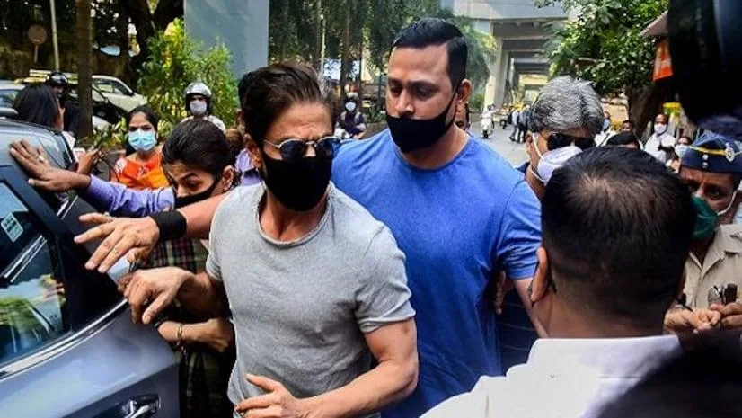
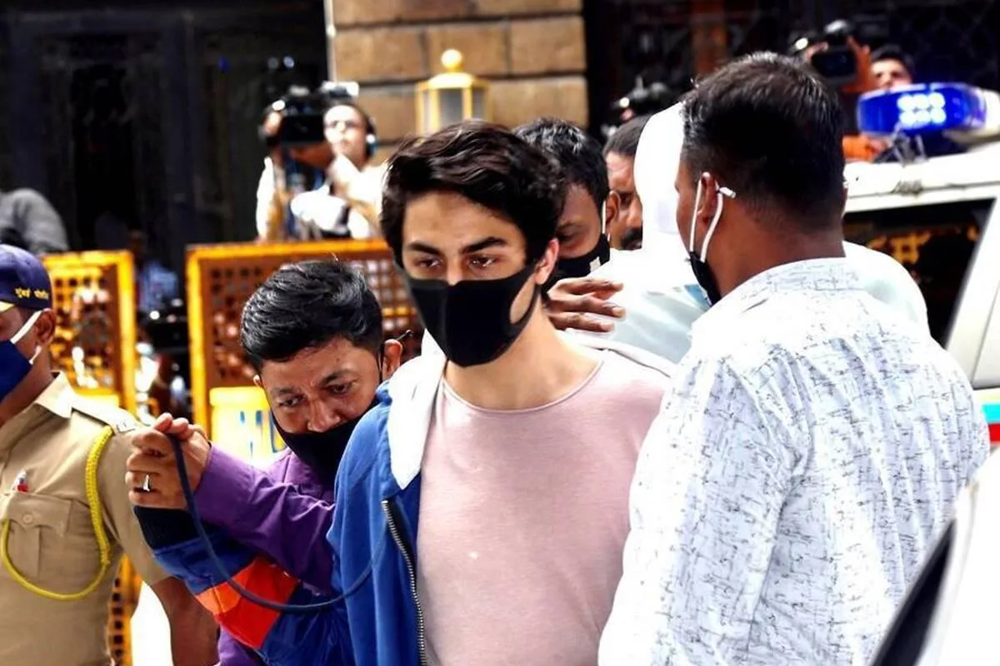

The Final Thesis · section 61 of 92
PART III — THE HUMAN RUPTURE
6. October 2021: The King alone



5
On October 3, 2021, the arrest of Aryan Khan brought Shah Rukh Khan's family into an intense public and legal crisis.
The episode unfolded as the COVID-19 pandemic continued to shape everyday life, institutions and public behaviour.
For Shah Rukh Khan, the situation was not a film release, a commercial negotiation or a publicity event. It was a deeply personal matter involving his son and his family.
His limited public commentary during this period became part of the public narrative.
This chapter must be handled differently from the marketing chapters.
The case study can document the legal chronology, the public statements, the media coverage, the period of silence and the subsequent return to professional activity. It can also explore the author's interpretation of the experience of watching a highly visible public figure face a private family crisis under intense scrutiny.
It cannot establish, from silence alone, what Shah Rukh Khan was thinking, what he intended strategically, or whether every public figure or institution acted out of fear.
Nor can it accurately state that no one supported him. Public expressions of support and fan activity must be considered alongside the user's recollection of the atmosphere.
The question that matters to the marketing study
What happens when a brand built partly on visibility, connection and constant public communication suddenly becomes silent?
Conventional crisis communications often emphasise immediate statements, reputation management, controlled messaging and the management of public perception.
But a personal family crisis is not simply a brand crisis.
The choice not to turn a family's legal ordeal into a marketing narrative may be a boundary between private life and public work. Whether it was a conscious communications strategy cannot be established without reliable evidence.
The silence nevertheless created a striking contrast with the highly visible campaigns of the previous decade.
In the context of this study, October 2021 is the human rupture between the earlier innovation narrative and the subsequent cinematic resurgence.
It is not a claim that personal tragedy caused later commercial success.
It is a moment after which the public-facing story of the star changed.
The volcano metaphor
The author's interpretation is that the period represented a profound isolation: a moment when a figure associated with mass adoration seemed to be standing alone in an atmosphere of public fear and scrutiny.
That interpretation can be retained as a personal and cultural lens, provided the publication distinguishes it from a factual claim about the entire public.
The case study's central question is more precise:
How did a superstar's public-facing brand evolve when personal silence was followed by a return to large-scale cinematic communication?
The answer requires the next act.